Admin 後台用戶指南
本指南是 Warehouse Admin 後台（桌面版管理主控台）所有頁面的完整視覺參考：每個頁面顯示甚麼、每個功能做甚麼。所有截圖均以桌面瀏覽器拍攝，並使用示範種子資料（預設語言為繁體中文（香港））。
PDA 操作員畫面請參閱 PDA 用戶指南；本頁是整個後台的地圖。
登入畫面
開啟後台網址時，管理員會看到 DocPal 登入畫面。
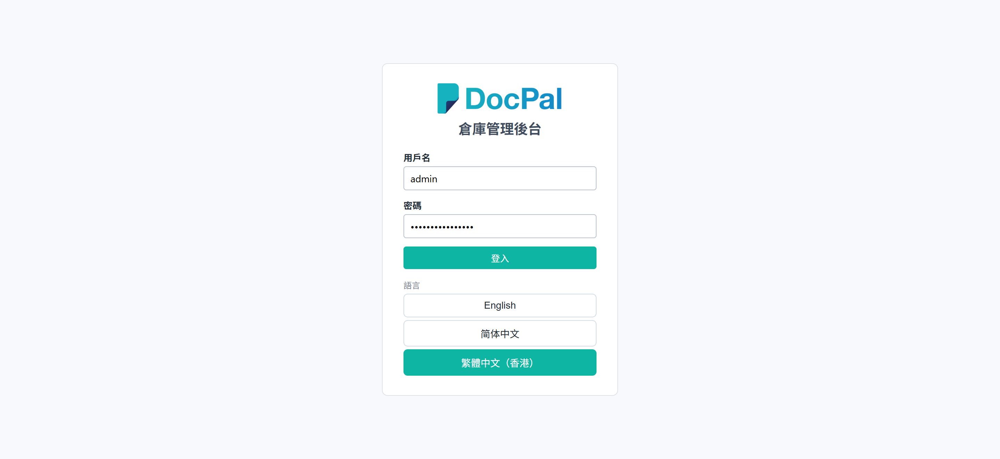
登入畫面
- 輸入用戶名。
- 輸入密碼。
- 點按登入。
- 登入前可在下方切換語言（English／简体中文／繁體中文（香港））。
只有屬於 admin 群組的用戶才能登入後台。示範種子用戶為 admin / DocPalAdmin2026!（正式部署前必須更改）。
主頁與版面導覽
登入後，主頁以卡片列出所有功能入口，與左邊側欄的分組相同。
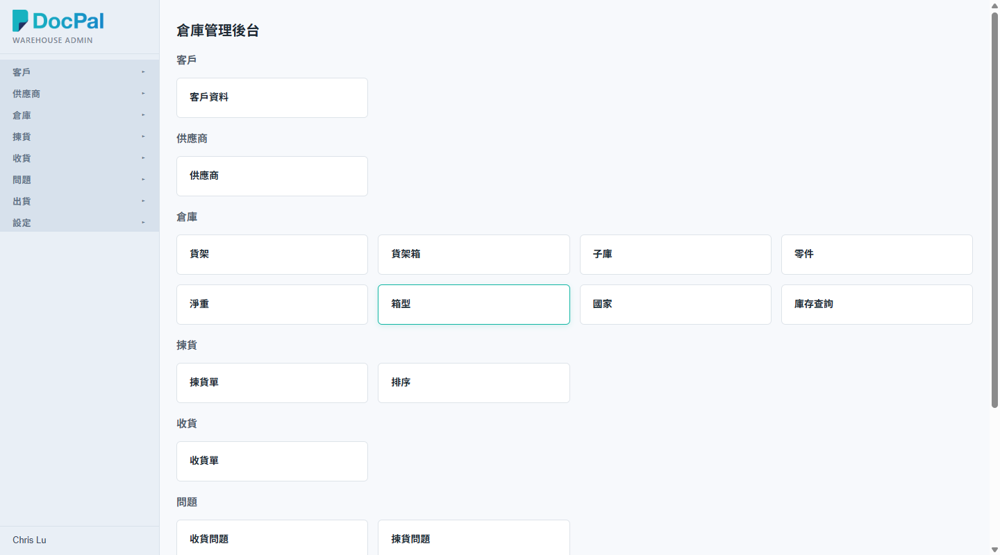
主頁
- 側欄 — 功能分為：客戶、供應商、倉庫、揀貨、收貨、問題、出貨、設定；點按分組可展開／收起。
- 主頁卡片 — 與側欄項目一一對應，點按直接進入該頁。
- 左下角用戶名（圖中「Demo Admin」）— 點按開啟彈出選單：切換語言及登出。
客戶
客戶資料
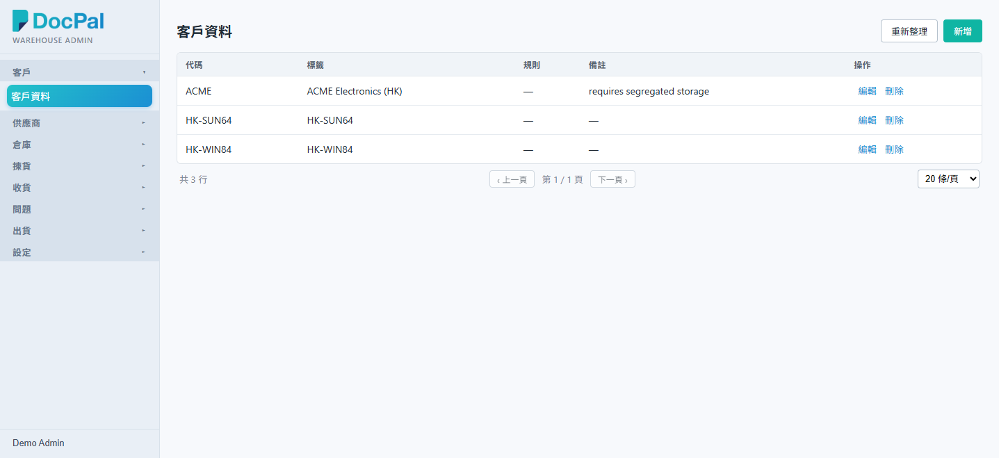
客戶資料
- 客戶主檔：新增、編輯、刪除客戶資料。
- rule 欄位記錄客戶的自訂要求（例如標籤或文件的特殊規定）。
供應商
供應商
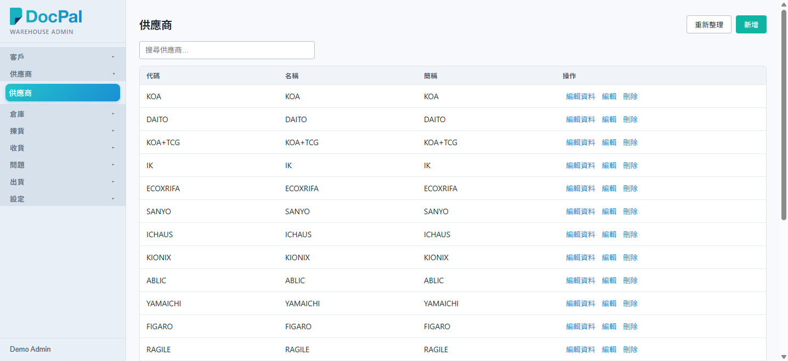
供應商
- 供應商主檔（與 Oracle AP_SUPPLIERS 同步的鏡像）：新增、編輯、刪除。
- 頂部搜尋欄可按關鍵字即時篩選列表。
- 每行的編輯資料開啟供應商資料（Supplier profile）對話框 — 編輯 PDA 本地的供應商設定，包括 QR 掃描模板（見下文）。
QR 掃描模板編輯器
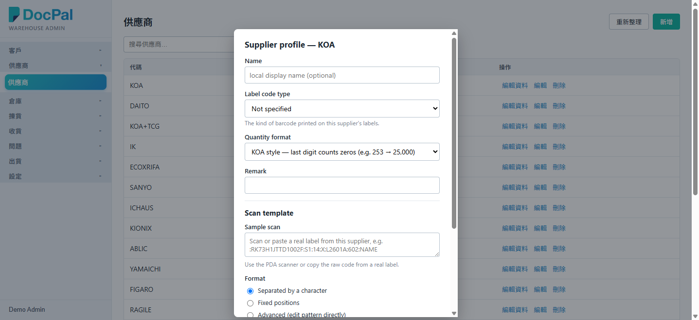
QR 掃描模板編輯器
- 供應商資料對話框內的 Scan template 區段，用於教 PDA 解析該供應商標籤的 QR／條碼內容（此對話框內部維持英文介面）。
- Sample scan — 貼上或掃描一個真實標籤內容作為範例。
- Format — 選擇解析方式：以分隔字元拆分（Separated by a character）、固定位置（Fixed positions）或進階（直接編輯規則）。
- 為每段內容標記欄位（料號、數量、日期碼等）後，下方會即時顯示解析預覽，並可用測試台驗證其他標籤。
- Quantity format — 該供應商標籤的數量編碼方式（例如 KOA 格式：最後一位代表零的個數）。
倉庫
貨架
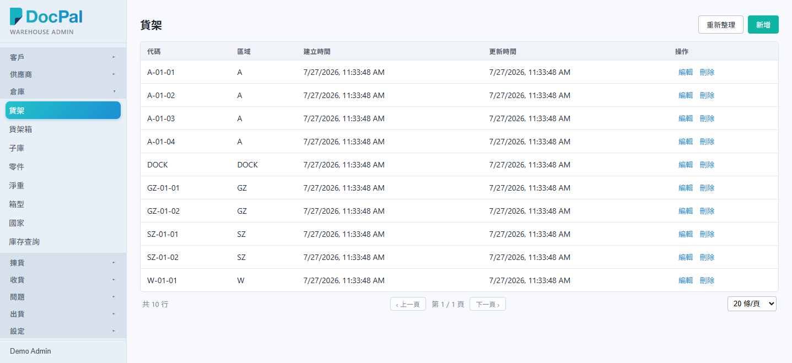
貨架
貨架箱
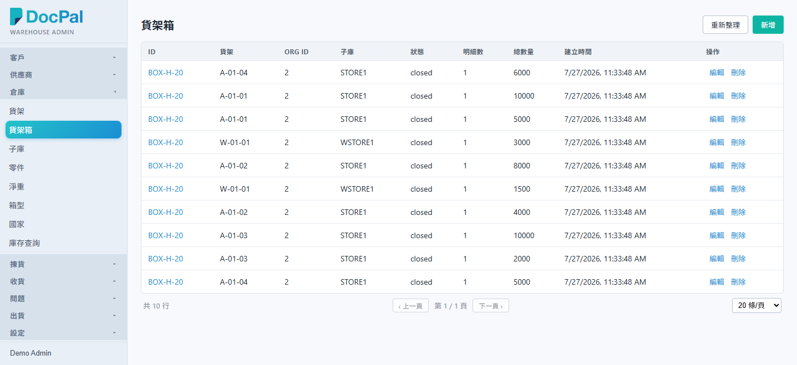
貨架箱
- 列出所有貨架箱：箱號、所屬貨架、ORG／子庫及狀態。
- 點按箱號開啟箱詳情。
貨架箱詳情
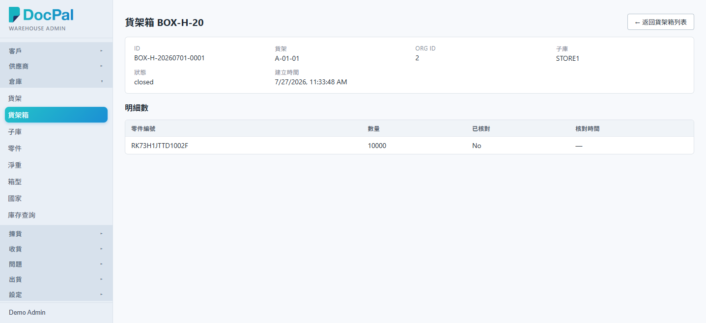
貨架箱詳情
- 顯示箱的基本資料及箱內批次（料號、數量、日期碼等）。
- 箱內項目為唯讀 — 庫存異動只能透過 PDA 流程（上架、揀貨、查貨）進行。
子庫
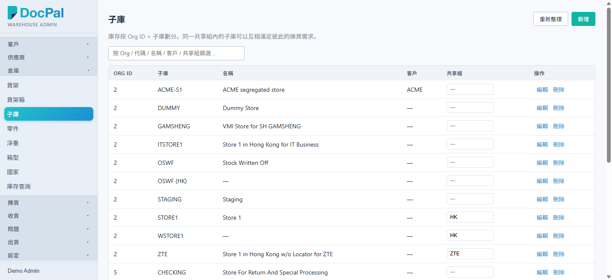
子庫
- 子庫（Sub-inventory）主檔：以 ORG + 代碼為群組，客戶專屬倉會標示客戶代碼。
- 每行可直接編輯共享群組（share group）— 同一共享群組的子庫可互相供貨給對方的揀貨需求；留空表示只供自己使用。
- 頂部可按關鍵字篩選及排序。
零件
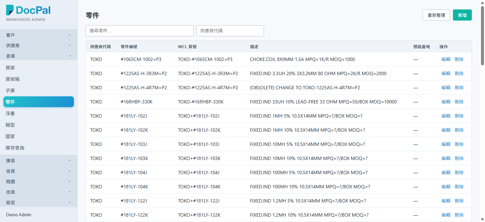
零件
- 零件主檔（約十萬筆 Oracle 料號）：伺服器端分頁，頂部可按料號關鍵字搜尋、按供應商篩選，欄位標題可點按排序。
- 新增、編輯、刪除零件（料號為唯一鍵，其他表以此引用）。
淨重
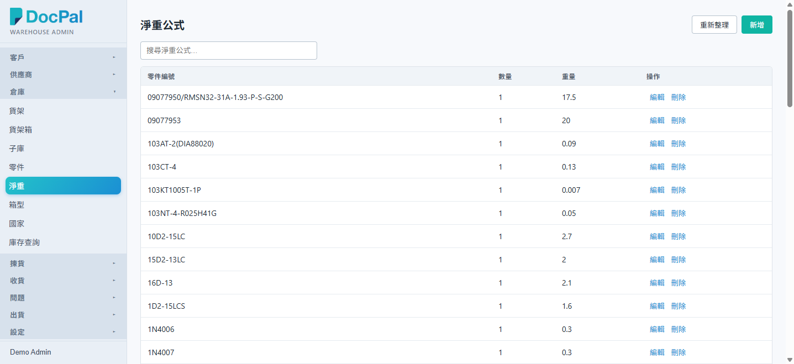
淨重
- 淨重公式表：按料號設定單件淨重，供測量／覆核流程自動計算並預填箱件淨重（公斤）。
箱型
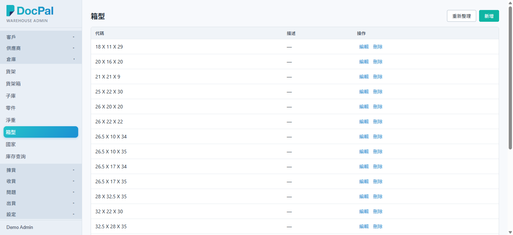
箱型
國家
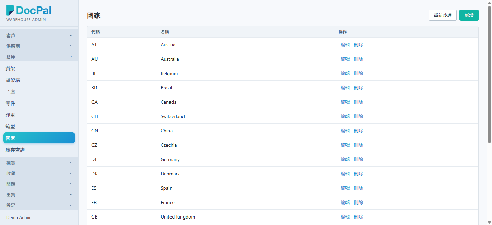
國家
庫存查詢
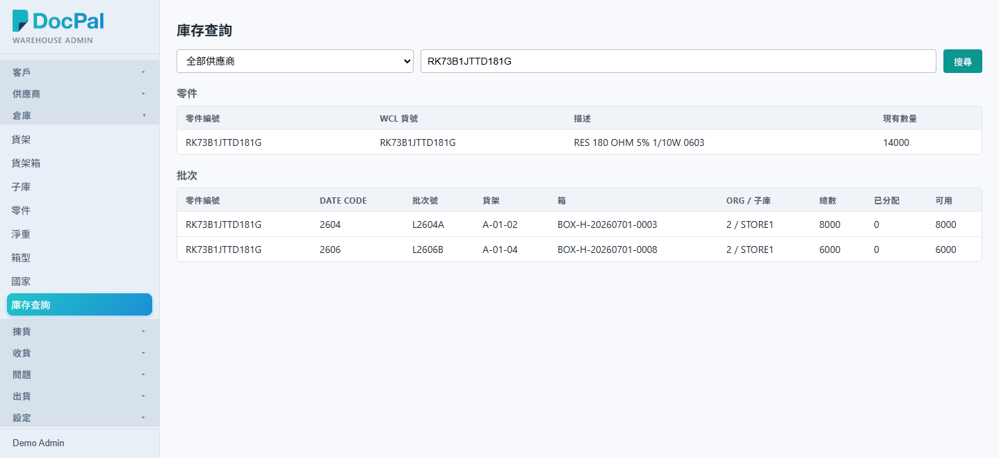
庫存查詢
- 唯讀查詢：選擇供應商（或全部）及輸入料號關鍵字，按搜尋。
- 零件表顯示匹配料號的概要（料號、WCL 貨號、描述、現有數量）。
- 批次表顯示每個庫存批次：DATE CODE、批次號、貨架、箱、ORG／子庫、總數、已分配及可用數量。
揀貨
揀貨單
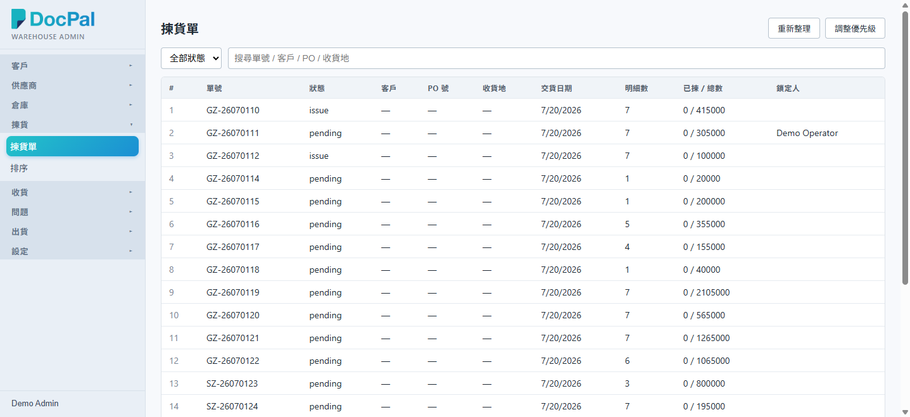
揀貨單
- 以優先順序（priority_seq）列出揀貨單：單號、客戶、交貨日期、狀態等。
- 狀態篩選 — 全部、pending、issue 等；揀貨員在 PDA 上報問題的單會以 issue 狀態顯示。
- 點按單號開啟揀貨單詳情。
排序
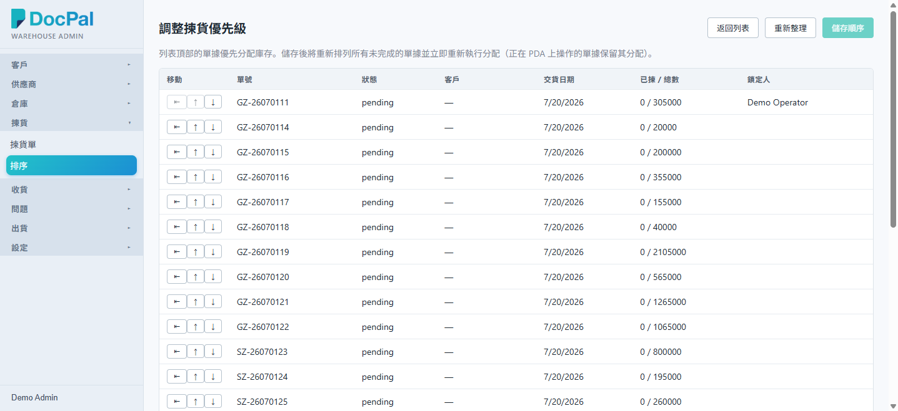
排序
- 拖拉調整揀貨單的優先順序，儲存後系統會按新順序重新分配庫存（排前的單先取貨）。
- 正被揀貨員操作的單（工作鎖定中）不會被重新分配影響。
揀貨單詳情
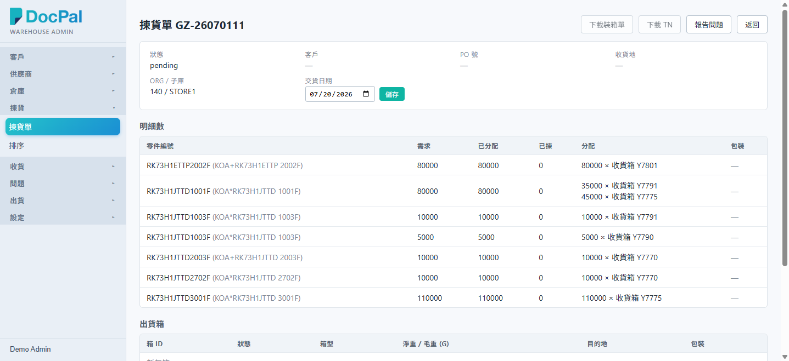
揀貨單詳情
- 頂部顯示狀態、客戶、PO 號、收貨地、ORG／子庫。
- 交貨日期 — 可直接修改後按儲存（會寫入操作記錄）。
- 明細數 — 每個項目的零件編號、需求、已分配、已揀數量，以及分配來源（哪個收貨箱）及包裝進度。
- 出貨箱 — 此單的運輸箱：箱 ID、狀態、箱型、淨重／毛重（公斤）、目的地及包裝進度。
- 操作記錄 — 頁底的審計日誌（見下文「通用操作說明」）。
- 右上角：報告問題（見下文）；下載裝箱單／下載 TN 為佔位按鈕（文件格式待定，暫未開通）。
報告揀貨問題
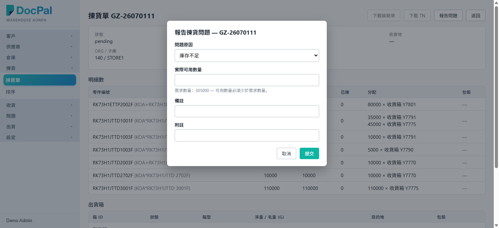
報告揀貨問題
- 揀貨單詳情的報告問題開啟此對話框（與 PDA 揀貨員上報問題相同效果）：
- 問題原因 — 例如「庫存不足」。
- 實際可用數量 — 必須少於需求數量（對話框會顯示需求數量作提示）。
- 備註及附註 — 補充說明。
- 提交後揀貨單轉為 issue 狀態，並從揀貨員的待辦中暫停，直至問題解決。
問題單詳情與解決
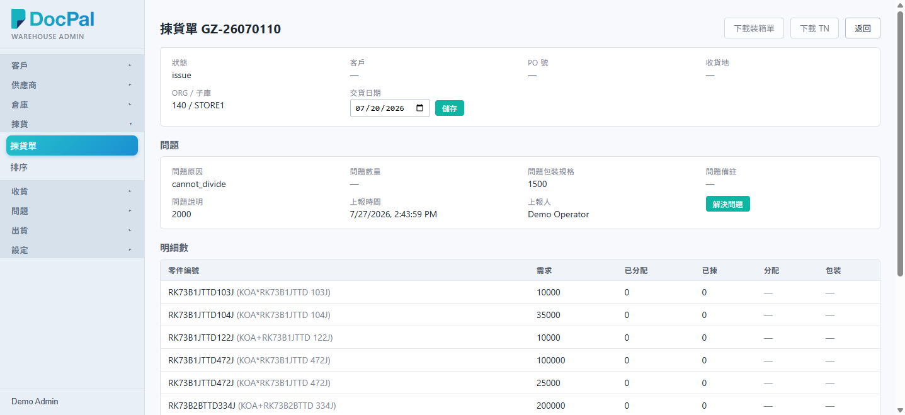
問題單詳情
- 狀態為 issue 的揀貨單會在詳情頂部顯示問題區塊：問題原因、問題數量、問題包裝規格、問題備註、問題說明、上報時間及上報人（顯示用戶姓名）。
- 按解決問題（可附解決備註）— 揀貨單回到 pending 狀態，系統隨即重新分配庫存，揀貨員可繼續作業。
- 上報及解決都會記入頁底的操作記錄。
收貨
收貨單
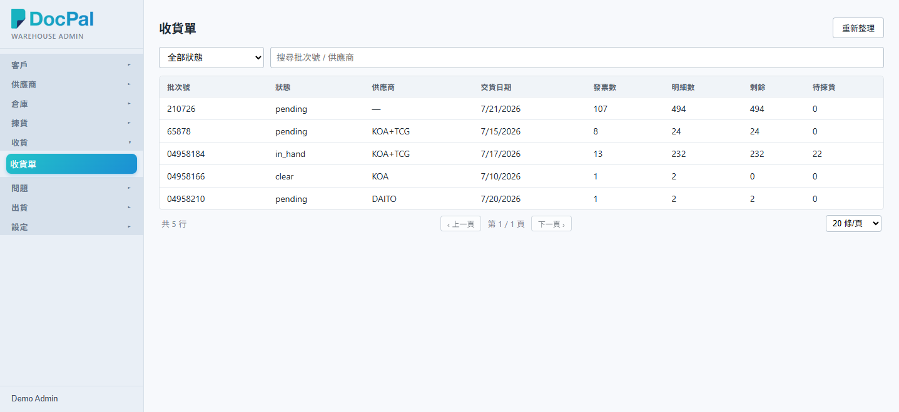
收貨單
- 列出收貨單：批次號、供應商、交貨日期、狀態等。
- 狀態篩選 — 全部、pending、provisional_received、received 等；有待揀貨需求的單會顯示待揀貨標記。
- 點按批次號開啟收貨單詳情。
收貨單詳情
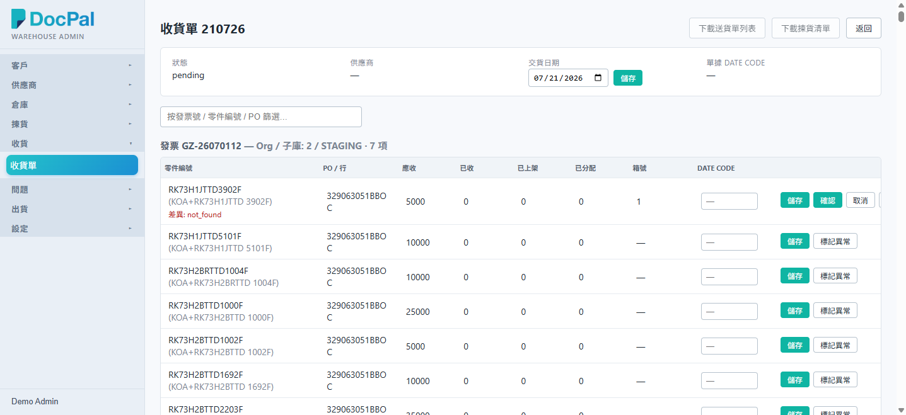
收貨單詳情
- 頂部顯示狀態及單據 DATE CODE（可修改後按儲存）。
- 篩選欄 — 按發票號／零件編號／PO 即時篩選下方項目。
- 每張發票列出其項目：零件編號、數量、箱號、DATE CODE（可逐項修改後按儲存）及每項進度。
- 每個項目的操作：
- 標記異常 — 開啟異常對話框（見下文）。
- 已標記異常的項目會顯示紅色「差異：」註記及原因，並提供：確認（已知悉，標記保留作審計記錄）、取消（清除該差異）、移除（從訂單刪除該項目；若該項目已開始收貨作業會被拒絕）。
- 操作記錄 — 頁底的審計日誌（見下文「通用操作說明」）。
- 右上角：下載送貨單列表／下載揀貨清單 為佔位按鈕（文件格式待定，暫未開通）。
標記異常
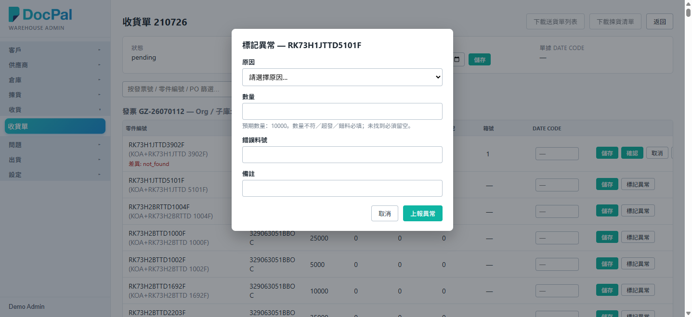
標記異常
- 項目上的標記異常開啟此對話框（與 PDA 收貨員匯報問題相同效果）：
- 原因 — 找不到（not_found）、損壞（damaged）、數量不符（qty_mismatch）、錯誤物料（wrong_part）、超量出貨（over_shipment）、品質拒收（quality_rejection）。
- 數量 — 數量不符／超發／錯料時必填；找不到時必須留空（對話框會顯示預期數量作提示）。
- 錯誤料號 — 原因為錯誤物料時填寫實際收到的料號。
- 備註 — 補充說明。
- 按上報異常提交後，項目會加上差異註記，並出現在「問題 → 收貨問題」頁。
問題
收貨問題（收貨差異）
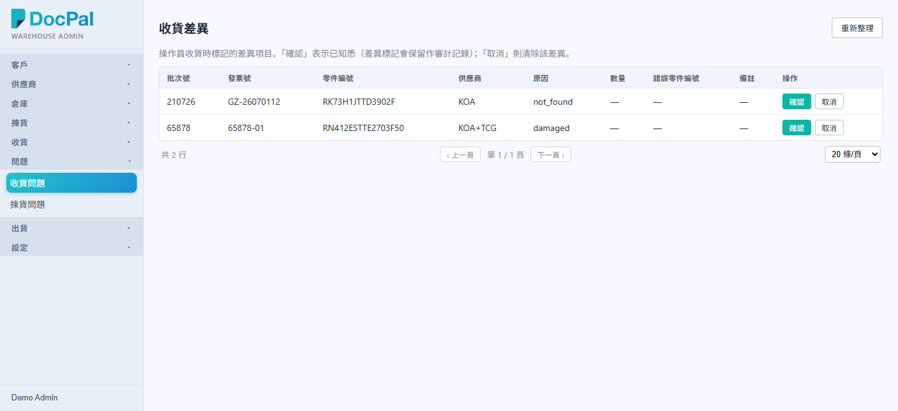
收貨問題
- 跨訂單列出所有未處理的收貨差異：批次號、發票號、零件編號、供應商、原因、數量、錯誤零件編號及備註。
- 每行操作：確認（已知悉 — 差異標記會保留作審計記錄）；取消（清除該差異）。
- 差異的完整歷史（包括已處理的）可在該收貨單詳情頁底的操作記錄查看。
揀貨問題
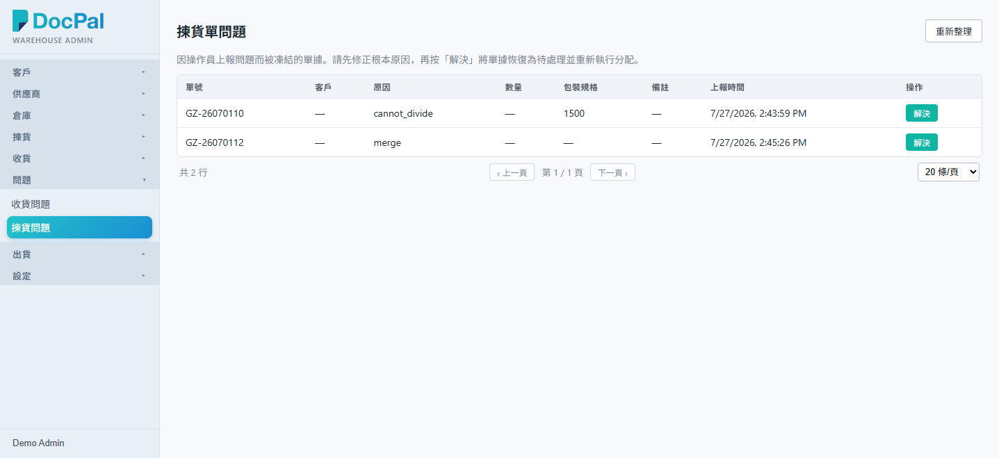
揀貨問題
- 列出所有狀態為 issue 的揀貨單及上報的問題資料（原因、數量、上報人、上報時間）。
- 點按單號進入詳情，按解決問題 — 訂單回到 pending 並重新分配庫存。
出貨
出貨單
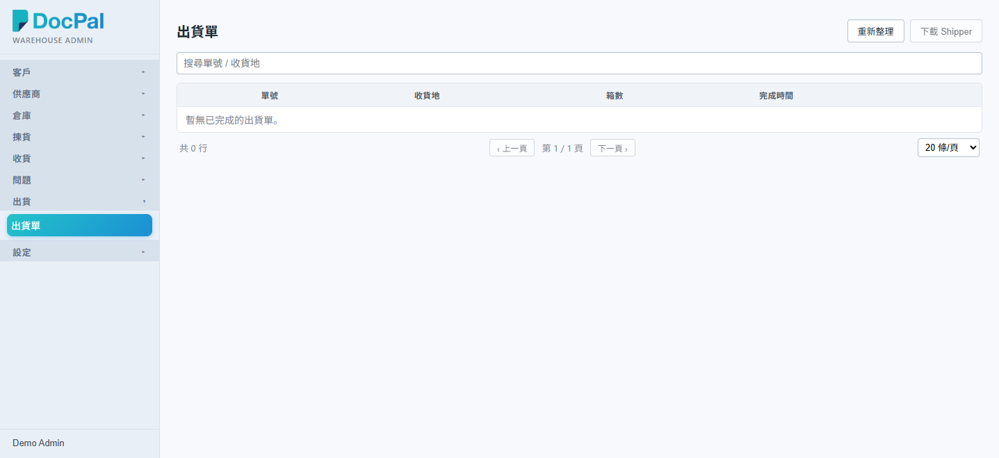
出貨單
- 列出可以出貨的訂單：單號、收貨地、箱數（已封箱進度）及完成時間；頂部搜尋欄可按單號／收貨地即時篩選。
- 列表來源會按流程設定（哪些步驟已啟用）自動調整：
- 覆核步驟啟用 — 已完成覆核的任務；
- 覆核關閉、測量啟用 — 已完成測量的任務；
- 兩者都關閉 — 已完成揀貨的訂單。
- 點按單號開啟出貨單詳情：顯示單據狀態、客戶、PO 號，以及每個箱的箱型、淨重／毛重（公斤）、目的地及箱內包裹清單（含核對狀態）。
- 核取方塊可多選多張出貨單，供日後下載承運商（Shipper）文件之用。
- 示範種子資料沒有走完流程的訂單，所以列表為空 — 需先在 PDA 完成揀貨、測量（及覆核）流程才會出現資料。
- 下載按鈕為佔位功能（承運商文件格式待定，暫未開通）。
設定
用戶
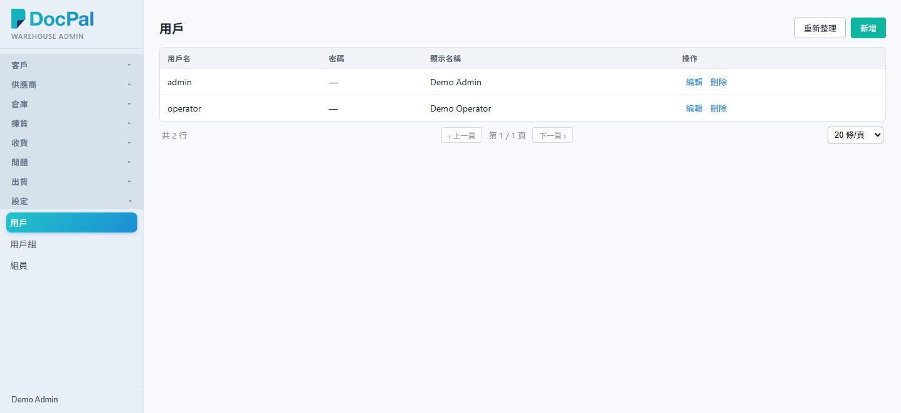
用戶
- 用戶主檔：新增、編輯、刪除用戶（登入名稱、顯示姓名、密碼）。
- 用戶本身沒有角色欄位 — 權限由所屬群組決定。
用戶群組
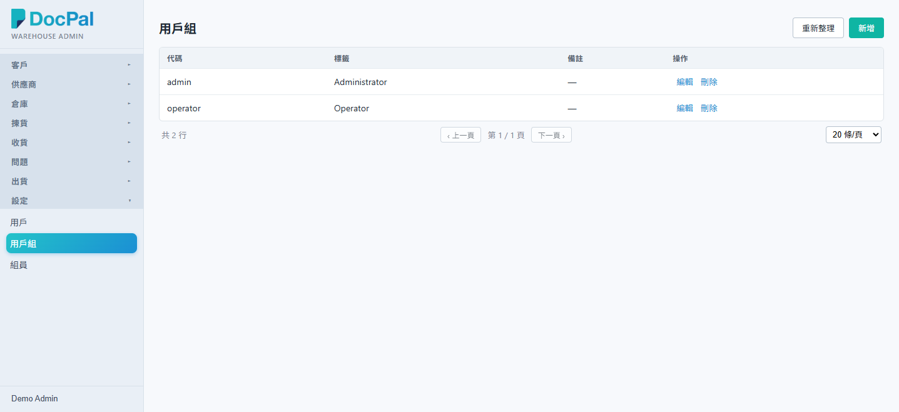
用戶群組
- 群組主檔：新增、編輯、刪除群組（例如 admin、operator）。
- 只有 admin 群組的成員可以登入此後台。
群組成員
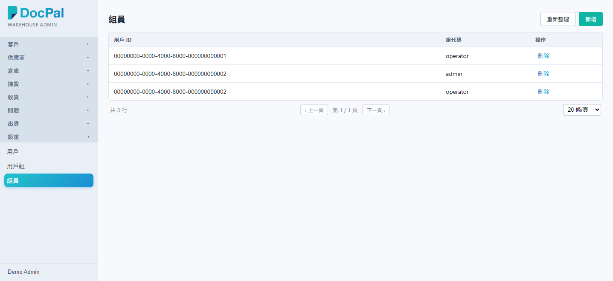
群組成員
- 群組與用戶的多對多關係：把用戶加入或移出群組。
- 一個用戶可屬於多個群組。
通用操作說明
- 分頁 — 列表頁底部可切換每頁 20／50／100 條及上一頁／下一頁；零件及淨重頁為伺服器端分頁。
- 排序 — 點按欄位標題可切換升序／降序。
- 搜尋／篩選 — 列表頂部的搜尋欄即時篩選（供應商、子庫等），或送往伺服器查詢（零件、庫存查詢）。
- 重新整理 — 大部分列表頁右上角有重新整理按鈕。
- 錯誤提示 — 操作失敗時頁面會顯示錯誤橫額及原因（例如移除已開始作業的項目會被拒絕）。
- 操作記錄 — 收貨單及揀貨單詳情頁底的審計日誌表：記錄每項改動的時間、操作人（顯示用戶姓名）、動作及內容 — 包括上報問題、解決問題、修改交貨日期、修改 DATE CODE、移除項目等，可用於追查訂單過往是否曾出現問題及如何處理。
- 下載按鈕 — 裝箱單、TN、送貨單列表、揀貨清單及承運商文件均為佔位功能，待文件 Excel 格式確定後才開通。
注意事項
- 後台直接修改主檔及訂單資料，沒有二次確認以外的安全網 — 刪除及移除操作請謹慎。
- 示範種子密碼（
admin / DocPalAdmin2026!）只供演示，正式部署前必須更改。
- 後台的資料改動（例如解決問題、調整優先順序）會即時反映到 PDA — PDA 列表會在重新聚焦或收到伺服器事件時自動更新。